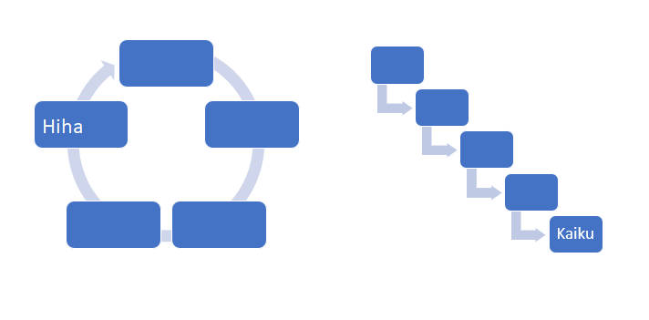

TLO-32400 Ohjelmallinen sisällönhallinta (5 op)
7.1.2020
Mistä on kysymys? 2/2
- Avoimen datan ympärille on syntynyt yhteisöjä
-
Avoindata.net
- Ja kaikkea ei aina kannata toteuttaa alusta asti itse
-
Bot Code Examples
- Esimerkiksi paikkatietoja yhdistämistä muihin datalähteisiin
-
Cartodb.com Geotagged Tweets mentioning #JeSuisCharlie, Paris time zone, January 7, 2015
Lisää esimerkkejä ja hyödyllistä materiaalia: Ohjelmallisen sisällönhallinnan tila 2018
Yksinkertaisen asiointipalvelun toteuttamisesta kohti ohjelmallista
sisällönhallintaa ja "eleganttia Web-ATK:ta"
Ohjelmallinen sisällönhallinta, kevät 2020
Vastuuopettaja: Jukka Huhtamäki (@jnkka)
Yhteystiedot: jukka.huhtamaki@tuni.fi
Huone: FB321
Luennot: tiistaisin kello 10.15-11.45 ja perjantaisin 9.00-9.45 SJ204 - ensimmäiset luentoviikot virtuaalisesti!
Harjoitukset: ei harjoituksia
Kotisivu:
ohsiha.github.io/2019
Twitter:
#ohsiha
Suorittaminen: harjoitustyö ja luentopäiväkirja (tai tentti)
Liity opintojakson Slack-alustalle
Muodolliset esitiedot
Opintojakson tarkoituksenmukainen suorittaminen edellyttää ymmärrystä sekä Web-hypermedian keskeisistä periaatteista että ohjelmoinnin perusteista:
- Web-hypermedian perusteet - moniko osaa HTML-merkkausta, CSS-tyylejä tai Javascript-ohjelmointia?
- Ohjelmointitaito välttämätön (~Ohjelmointi 2: Perusteet / Ohjelmoinnin peruskurssi)
- Suositeltavia esimerkiksi Web-ohjelmointi ja Johdatus tietokantoihin
Opintojakson sisältö ja vaatimustaso asettuu mukavasti opiskelijan omien taitojen mukaiseksi - suorittaminen toki edellyttää tietyn minimitason saavuttamista.
Opiskelusta - mitä opintojaksolla oppii?
Näkökulma on erityisesti asioiden sovelluksista riippumattomien perusteiden opiskelu:
ohjelmistot ja teknologiat tulevat ja menevät, ideat pysyvät.
Opintojakson tavoitteena on vastata muun muassa seuraaviin kysymyksiin:
- Mitä tarkoittaa ohjelmallinen sisällönhallinta? Mitä keinoja on olemassa ohjelmallisen sisällönhallinnan toteuttamiseen?
- Mitä toimintoja ohjelmallinen sisällönhallinta edellyttää ja miten ominaisuudet toteutetaan?
- Mitkä ovat ohjelmoinnin tuomat lisäarvot hypermediasovelluksen toteuttamisessa?
- Mitä yleisiä ominaisuuksia verkkopalveluina toteutettavissa informaatiojärjestelmissä on? Miten ominaisuudet toteutetaan käytännössä?
- Mitä keinoja informaatiojärjestelmän käyttäjän toiminnan tukemiseen on olemassa? Mitä niiden toteutuksessa on otettava huomioon?
Esimerkiksi mukautuvien järjestelmien toteuttaminen edellyttää käytännössä aina ohjelmointia.
Haluatko datatieteilijäksi?
Web yleensä, ja sosiaalinen media erityisesti, tuottavat joka päivä valtavan määrän uutta dataa, jota analysoimalla on mahdollista tuottaa uutta tietoa ihmisistä - esimerkiksi heidän tarpeistaan arvonluonnin tueksi.
Ammattinimike data scientist on ilmestynyt laajempaan käyttöön viime aikoina. Haussa on yhdistelmä taitoja:
- (Web-)tietojenkäsittely (koostepalvelut, informaation visualisointi, korkea vuorovaikutus).
- Edistyneet algoritmit (tilastolliset menetelmät, matematiikka, signaalinkäsittely, koneoppiminen, verkostoanalyysi).
- Käytettävyys ja käyttökokemus (user experience, UX)!
Esimerkiksi datajournalistit
soveltavat vastaavanlaista osaamista uudenlaisten journalististen ratkaisujen kehittämisessä.
Entä Web-ohjelmoijaksi?
- Rautaista Web-ohjelmointiosaamista tavoittelevia opiskelijoita kannustetaan suorittamaan
Ohjelmallisen sisällönhallinnan ohella myös opintojakso Web-ohjelmointi.
- Opintojaksot tarkastelevat osin samoja teemoja, mutta näkökulmat ja painotukset eroavat toisistaan:
- Ohjelmallinen sisällönhallinta lähestyy informaatiojärjestelmiä käyttöliittymän, tietosisällön käsittelyn automatisoinnin ja sovelluksen toiminnallisuuden näkökulmista.
- Erityisesti painotamme analytiikan kojelautojen ja muiden datatuotteiden toteuttamista.
- Web-ohjelmoinnissa pääpaino on verkkopalveluiden teknisesti laadukkaassa totetuksessa.
- Opintojaksojen suorittaminen rinnakkain on mahdollista ja myös hyödyllistä.
Huomioi kuitenkin esitiedot ja harjoitustöiden vaatima työmäärä.
- Keväällä 2020 edetään suoraviivaisesti korkean tason sovellus- ja järjestelmäkehitykseen
ja jätetään teknologiset yksityiskohdat käsiteltäväksi
esim. Web-ohjelmointi-opintojaksolla. Toki yksityiskohtia oppii myös harjoitustyötä tehdessä.
Myös tekniikkaa
Toimintojen ja prosessien ohella kevään aikana käydään läpi myös teknisempiä kysymyksiä:
- Minkälainen on tietokantapohjaisen verkkopalvelun arkkitehtuuri? Entä hajautetun verkkopalvelun?
- Mitä vaihtoehtoisia toteutusteknologioita on olemassa? Miten valitaan tarkoituksenmukainen teknologia?
- Miten toteutetaan rikkaan vuorovaikutuksen mahdollistavia sovelluksia saavutettavasti?
- Minkälaista on on käytettävien ja käyttökelpoisten verkkopalveluiden toteuttamisen mahdollistava teknologia?
Suoritusvaatimukset
- Luentopäiväkirja tai tentti 9-18p
- Harjoitustyö 0-12p + porkkana 6p
Opintojakson arvosana muodostuu seuraavasti:
Oppimispäiväkirja tai tentti 18p
Oppimispäiväkirja
- Tiivistelmä kustakin luentoviikosta: 150 sanaa
- Viisi oivallusta tai tärkeintä oppimaasi asiaa
- Yhdestä kolmeen kehitysehdotusta luentoviikon antiin
- Ilmoita Jukalle mikäli olet kiinnostunut oppimispäiväkirjalla suorittamisesta
- Lisätietoja oppimispäiväkirjasta ja sen arvioinnista
Tentti
- Kevään päätteeksi järjestetään kolme tehtävää sisältävä tentti, josta
voi kerätä (3 x 6 =) 18 pistettä.
Suorittaminen edellyttää vähintään 9 pisteen keräämistä tentistä
tai oppimispäiväkirjasta ja yhteensä vähintään 15 pisteen keräämistä.
Harjoitustyö 18p
- Harjoitustyön kaksitoista ensimmäistä pistettä toimivat
"neljäntenä ja viidentenä tenttitehtävänä"; ne siis vaikuttavat
suoraan arvosanaan.
- Viimeiset kuusi pistettä toimivat perinteisinä porkkanapisteinä:
Pienimmät yksittäisestä tenttitehtävästä kerätyt pisteet korvataan
porkkanapisteillä jos korvaaminen nostaa arvosanaa.
- Harjoitustyön tekeminen on olennainen osa kevään
työskentelyä. Harjoitustyön aihe on vapaavalintainen ja myös
toteutusteknologiassa on valinnaisuutta.
- Harjoitustyön lopputuloksena syntyy portfoliollinen toteutettuja ominaisuuksia ja niiden tiiviit kuvaukset Slack-ympäristöön julkaistuna.
- Lisää harjoitustyöstä perjantain koodikliniikalla.
Opintojakson suorittaminen
- Luennot pidetään 3. periodilla. Harjoitustyön toteutusta voi kuitenkin halutessaan jatkaa 4. periodilla.
- Käsiteltävät asiat ja painotukset muuttuvat vuosittain. Huomattava osa opintojakson sisällöstä avautuu
harjoitusten, itseopiskelun ja harjoitustyön kautta.
- Prujun lisäksi luennoilla käydään läpi paljon käytännön esimerkkejä ja muuta asiaan liittyvää.
Ajantaiset tiedot opintojakson sisällöstä löytyvät aina luentopäiväkirjasta.
Palaute on erittäin tervetullutta

Huomioitavaa ohjelmallista sisällönhallintaa käsiteltäessä
- Ohjelmallinen sisällönhallinta ja informaatiojärjestelmät != Web.
Toteutukset ovat mahdollisia eri tavoin ja eri menetelmin (älypuhelinten sovellukset,
Flash, MS Silverlight, Delphi, ..., Universal Windows Platform, Cocoa, Ubuntu, ...)
- Laadukkaan sovelluksen tekeminen edellyttää aina sen sovellusalueen teknistä
osaamista, jonka parissa työskennellään. Laajoista osaamisvaatimuksista johtuen
informaatiojärjestelmien kehittäminen on käytännössä aina ryhmätyötä.
Vinkkejä menneiltä vuosilta
Kannattaa muistaa, että opintojakso suoritetaan siksi, että asioita
opiskeltaisiin ja opittaisiin, eli:
- Laajenna osaamistasi: yhden käsiteltävän osa-alueen, esimerkiksi ohjelmoinnin,
hallitseminen on hyvä asia, mutta kannattaa yrittää laajentaa näkökulmaansa ja pohtia josko
informaatiojärjestelmien kehittäminen olisi muutakin kuin vain X:n tekemistä.
- Ole oma-aloitteinen: jos jokin asia on jo tuttua,
syvennä oma-aloitteisesti tietojasi siitä
etsimällä itse lisämateriaalia!
- Älä ylenkatso noviiseja: jokainen oppii asioita joskus ensimmäistä kertaa.
Vastaa mielestäsi turhan helppoihin kysymyksiinkin asiallisesti. Vältä jargonia.
- Suhtaudu sovelluksiin, menetelmiin ja teoriaan kriittisesti. Kysy koko ajan: miksi näin?
mitä tämä tarkoittaa? miten tätä voisi käyttää? mikä tässä on olennaista?
- Muista että informaatiojärjestelmät & tietokoneet ovat ihmisen ihmiselle tekemiä asioita
& kapistuksia: suhtaudu niihin sen mukaisesti(hyvässä ja pahassa).
"Näin on aina tehty" on harvoin hyvä perustelu.
Rikkaus: informaatiojärjestelmien kehittäminen on tämän päivän käsityöläisyyttä:
tekemällä oppii eikä osaaminen ole ikinä valmis.
Opintojakson opetusmuoto ja materiaali
Oppimateriaalin rungon muodostaa luentopäiväkirja, joka jäsentää
otsikkotasolla kokonaisuuden hallittavaan muotoon ja toimii muistilappuna luentojen sisältöön.
HUOM! Luentorunko ei missään tapauksessa sisällä koko oppimateriaalia, vaan ainoastaan jäsentää sitä!
Luentopäiväkirjan lisäksi opintojakson sisältöön kuuluvat
- Github-kokonaisuuteen julkaistut koosteet eri aiheista
- luentojen yhteydessä vapaamuotoisesti (esim. taululla tai tietokone-esimerkkien avulla) käsitellyt asiat
- luentorungossa ja kotisivulla mainitut lähteet (soveltuvin osin, totta kai)
- harjoitustyö
Esimerkkejä verkkomateriaalista
W3C:n määrittelevät teknologiat ovat keskeisessä roolissa:
Django-sovellusten kehittäjille ja Python-ohjelmointiin suunnattua materiaalia tarjoavat esim.
Myös HTML5-kieleen ja muihin ajankohtaisiin Web-teknologioihin perehtymiseen löytyy tukimateriaalia pilvin pimein.
1. Ohjelmallinen sisällönhallinta
Ohjelmointi mahdollistaa sisällönhallinnan (kerääminen, jalostaminen)
automatisoinnin, toteutustyön automatisoinnin, monikanavajulkaisemisen
sekä vuorovaikutuksen ja hajautuksen toteuttamisen. Nyt
ohjelmallista sisällönhallintaa käsitellään lähinnä
Web-pohjaisten informaatiojärjestelmien näkökulmasta:
- Web on olennaisilta osiltaan tekstimuotoista hypermediaa
(HTML, SVG), joten näkymien ohjelmallinen tuottaminen on suoraviivaista
- Valtaosa informaatiojärjestelmistä on tällä hetkellä Webissä:
opintojakson opit voidaan siirtää suoraviivaisesti tuotantokäyttöön
- Web-soveltajien käytössä on rajaton joukko ilmaisuvoimaisia teknologioita
informaatiojärjestelmien toteuttamiseen
Ohjelmoinnilla on keskeinen rooli myös multimediaan tai
tiedon visualisointiin kallellaan
olevissa informaatiojärjestelmissä (Flash, Visual Basic, MS Silverlight,
Java, Delphi, ...). Näissä ohjelmointi keskittyy erityisesti
vuorovaikutuksen toteuttamiseen.
Mekaanisen työn automatisointi
Esimerkkejä mekaanisen työn automatisoinnista:
- Monipuolisten navigoinnin apuvälineet on tarkoituksenmukaista
toteuttaa ohjelmallisesti:
- Rakenteelliset linkit (murupolku, lineaarinen navigaatio,
mukautuva valikko) voidaan kaikki tuottaa
yhden rakennekuvauksen perusteella ohjelmallisesti
- Myös assosiatiivisten linkkien muodostaminen voidaan automatisoida
(~suosittelijajärjestelmät)
- Tietosisällön uudelleenkäyttö onnistuu esimerkiksi tallentamalla
tiedot tietokantaan tai määrämuotoiseen tekstitiedostoon ja
toteuttamalla julkaisurutiinit haluttuihin muotoihin ohjelmallisesti.
- Informaatiojärjestelmän tietosisällön päivittämiseen voidaan
rakentaa lomakkeisiin perustuvat toiminnot
Monikanavajulkaiseminen
Nykyaikainen Web-arkkitehtuuri
erottaa toisistaan URI-tunnisteen
yksilöimän resurssin ja sen representaation.
Representaatio räätälöidään päätelaitteen, käyttäjän ja käyttötilanteen
(=käyttökontekstin) perusteella.
Edellisen toteutus monikanavajulkaisemisen keinoin:
- Räätälöity julkaiseminen
(vrt. Multiple
Authoring):
resurssista julkaistaan kiinteä joukko representaatiota, joista valitaan
palvelukontekstiin sopiva vaihtoehto.
- Joustava julkaiseminen
(vrt. Flexible
Authoring):
representaatio räätälöidään pyynnön mukana välitettävän palvelukontekstin
kuvauksen perusteella (vrt.
content
negotiation).
- Nykyaikainen tapa monikanavaisuuden toteuttamiseen:
responsiivinen
design
Sekä räätälöity että joustava julkaiseminen on syytä toteuttaa
ohjelmallisesti.
Vuorovaikutuksen toteuttaminen
Käyttäjän syötteeseen reagointi edellyttää (navigointia lukuun ottamatta)
aina ohjelmointia. Esimerkiksi lomakkeen käsittely tapahtuu aina
ohjelmallisesti. Esimerkkejä toiminnoista:
- Informaatiojärjestelmän keskeisiä ominaisuuksia ovat esimerkiksi
hakutoiminto
ja mahdollisuus sisällön kommentointiin (annotointi)
- Verkkopalvelun yleisiä toimintoja ovat esimerkiksi
rekisteröityminen, käyttäjän tunnistaminen sekä
istunnon luominen ja hallinta
- Mukautuvassa (adaptiivisessa) informaatiojärjestelmässä käyttäjästä
luodaan malli, jonka perusteella sovelluksen sisältö ja navigaatio
mukautetaan käyttäjälle sopivaksi
- Käyttäjän on syytä tukea opasteiden ja
virheilmoitusten avulla.
Hajautetut informaatiojärjestelmät
API-talouteen ja Web 2.0 -ilmiöön usein liitetyt Web-rajapinnat (Web API) antavat
kehittäjälle aidon mahdollisuuden hajautettujen informaatiojärjestelmien
toteuttamiseen.
Muistatko vielä Hälytykset
kartalla? Edelleen kuuma mashup-skene tuottaa uusia toinen toistaan
mehukkaampia esimerkkejä Webissä tarjolla olevan tiedon yhdistelemiseen
perustuviin palveluihin.
Roy Fieldingin (2000) väitöskirjasta
Architectural
Styles and the Design of Network-based Software Architectures
liikkeelle lähtenyt Webin ja HTTP-protokollan uusi arvostus
antaa lisää tukea työlle.
Perehdymme opintojakson lopulla
REST/RESTful-ajattelun
perusteisiin ja käytännön soveltamiseen käytännön API-taloudessa.
Visuaalinen analytiikka
Informaation visualisointi on onnistunut Web-teknologioilla jo vuosia
(esimerkiksi Highcharts ja D3.js)
Visuaalinen analytiikka
(Heer ja Shneiderman,
2012) viittaa prosessiin, jossa dataa kerätään, jalostetaan,
visualisoidaan ja analysoidaan - yksin ja yhdessä
Kevään mittaan mietimme muun muassa
ryömijöitä,
raapijoita,
datan siivoamista
("tunkkaamista"?) (ehdotuksia paremmista käsitteistä otetaan vastaan!)
ja visualisointia
Ohjelmointi: asiakas vai palvelin?
Asiakas-palvelin –mallin mukaan toimivassa sovelluksessa ohjelmointiin
perustuvia ratkaisuja voidaan yleensä toteuttaa sekä selaimessa että palvelimella:
- Älykäs asiakas (Thick/Smart/Fat client):
suuri osa sovelluksen toiminnoista on toteutettu osana asiakassovelluksen toiminnallisuutta.
- Kevyt asiakas (Thin client): sovelluksen toiminnallisuus on toteutettu
osana palvelinsovellusta, asiakkaalle välitetään ainoastaan näkymiä sovelluksesta.
Web mahdollistaa sekä älykkään että yksinkertaisen asiakkaan toteuttamisen.
Viimeisten vuosien aikana kehitystyö on siirtynyt asiakaspainoitteiseksi.
"Palvelin on ystävä"?
Selaimeen tai muuhun asiakassovellukseen toteutettujen ratkaisuiden toimintavarmuus on Webissä
edelleen vaihteleva ja erilaiset toteutustekniikat (AJAX, JavaScript/ECMAScript,
Java-sovelmat, Flash, MS Silverlight, ...) ovat vahvasti sidoksissa käyttöympäristöön:
- Parhaassa mahdollisessa tapauksessa kaikilla on käytössään toimiva perustoteutus tietystä palvelusta ja
teknologian salliessa käytössä on rikas käyttöliittymä kaikilla herkuilla, ks.
Responsive Web Design
Progressive enhancement ja
Unobtrusive JavaScript.
- Ohjelmallisessa sisällönhallinnassa keskitytään palvelimella toimiviin ratkaisuihin, mutta myös
selainohjelmointia käydään läpi esimerkiksi visualisointien toteuttamisen yhteydessä.
- Harjoitustyössä voit vapaasti kokeilla myös selaimeen painottuvaa toteutusta. Esim.
React tai
muilla JS-kehyksillä on hyvä haaste varsinkin kokeneemmille
kehittäjille.
Lopuksi
Näe metsä puilta:
-
Web-soveltajien käytössä olevat ilmaisuvoimaiset ohjelmointikielet,
erilaiset koostepalveluiden eli "Web-survosten" (mashup) kehittämiseen
tarkoitetut kirjastot ja rajapinnat,
sovellusten toteuttamista merkittävästi suoraviivaistavat sovelluskehykset
ja W3C:n Semanttinen Web
työvälineineen antavat todellisen mahdollisuuden uusien mielikuvituksellisten (ja
vanhojen, jo unohdettujen) ideoiden toteuttamiseen.
- Sosiaalinen media, Web-palveluiden APIt ja esimerkiksi avoin data ruokkivat
kiihtyvään tahtiin kehittyvää Web-kehittäjien ekosysteemiä. Kehittäjien luovuus on se keskeisin rajoite.
- Opintojakson keskeisenä tavoitteena on tutustua joukkoon hypermedian ja informaatiojärjestelmien tutkimuksessa
kehitettyjä ja/tai nykyaikaisista käytännöistä kumpuavia ideoita ja oppia miten ideat voidaan
käytännössä toteuttaa käytössä olevien ilmaisuvoimaisten teknologioiden tuella.